A PSX-styled night-time taxi game in Unity 6 and C#, with a real drivetrain model, conversation-based gameplay and some funky GPS rerouting.
The problem
I wanted a driving game where the car feels like a real car and the city feels like a real place, without building either by hand.
What I built
A vehicle controller that models a real drivetrain, using the manufacturer's gear ratios and torque curve.
A GPS that plans the route with A* over the road network and recalculates it live when the player leaves it.
A city built from OpenStreetMap data in Blender, with a Python script that assigns materials by map tag.
Unity Editor tools that automate bulk changes across the road network.
Status
In active development. Code available on request.
The GPS on the dashboard recalculating the route after a wrong turn.Picking up the passenger.Choosing what to say while driving.Driving through the city.Drop-off, and a cigarette as a tip.
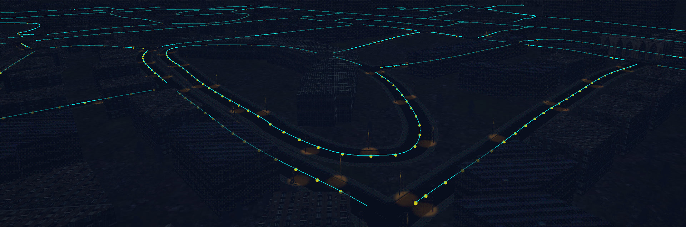
The road graph the A* search runs on.
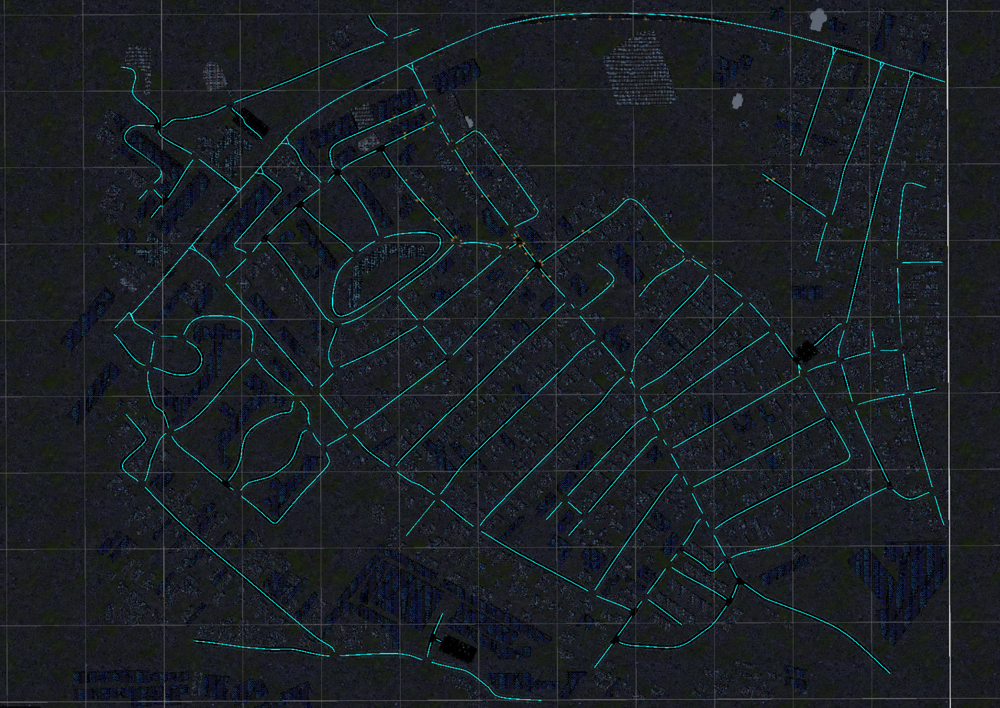
The full road network, generated from OpenStreetMap.
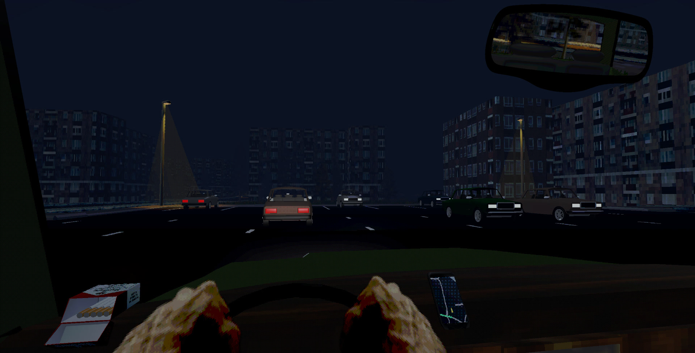
Traffic, with the GPS on the dashboard.
Unity 6
C#
A* pathfinding
Vehicle physics
Editor tooling
Blender
Python
OpenStreetMap
Music-reactive LED orb
An ESP32 fitted inside a pondering orb that turns music into colour and light, controlled from a phone over Bluetooth.
Press play with sound on: colour follows the notes being played, brightness follows the volume, and the lights pulse on the kick drum.
The problem
I wanted the orb to follow the music itself, not just flash with the volume, and I wanted to add this without damaging the original electronics.
What I built
Firmware that runs an FFT on audio from an INMP441 I2S microphone and groups the energy into the 12 musical notes to choose the colour.
Brightness that follows the volume, and kick-drum detection with a low-pass filter that pulses the lights.
A web app that connects over Bluetooth for live control, calibration and saving presets to the ESP32.
The original infrared remote's buttons remapped to switch between presets.
Hardware
ESP32, INMP441 microphone, WS2812B addressable LEDs, battery power, all fitted inside the original shell.
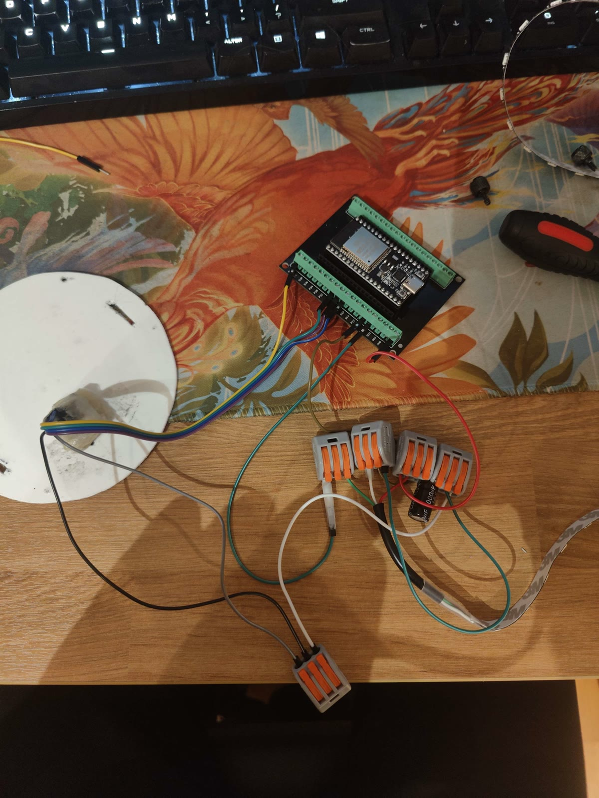
Wiring it up on the bench before it went in.
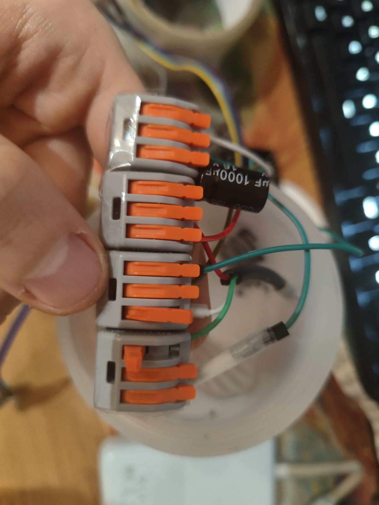
Power distribution, with a smoothing capacitor for the LEDs.
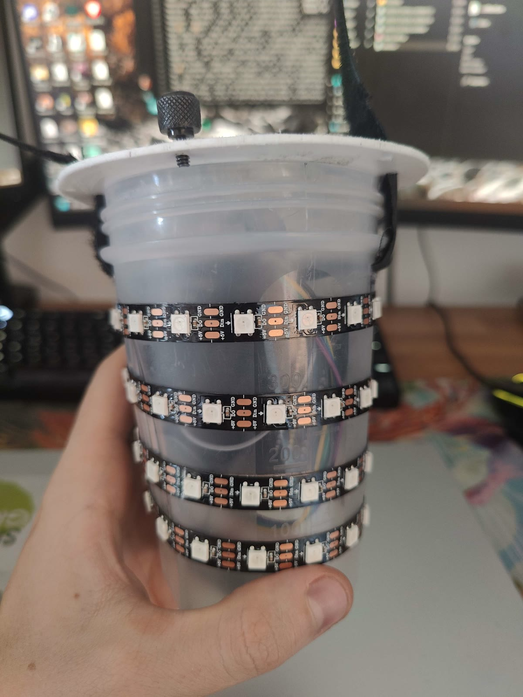
The inner core wrapped in WS2812B strip.
The control app
A web app that connects to the orb over Bluetooth from a phone, for live control, calibration and saving presets.
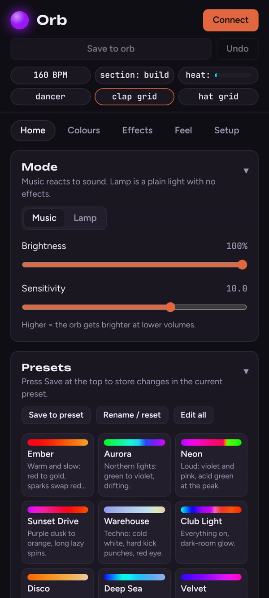
Modes and presets.
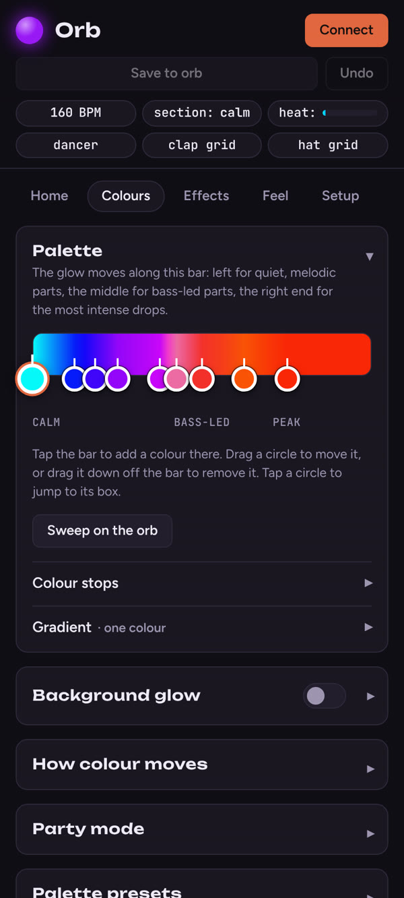
The colour palette, from calm to peak.
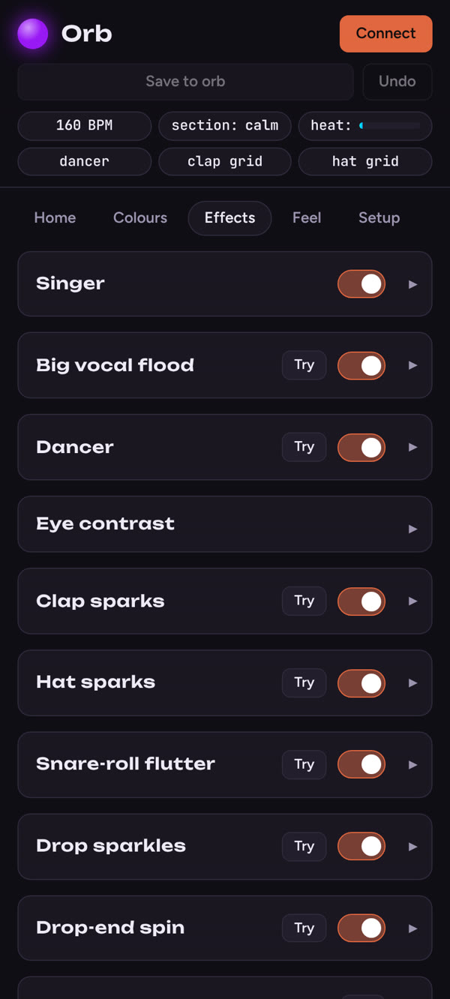
Effects, each tied to part of the music.
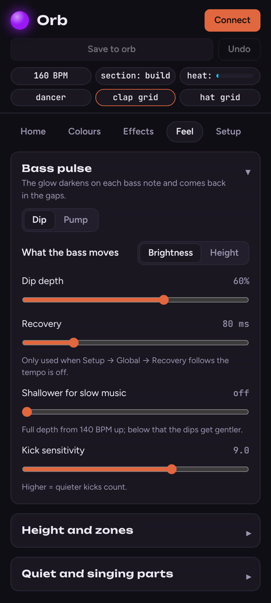
How the lights respond to the bass.
ESP32
Arduino C++
FFT
I2S audio
Bluetooth
WS2812B
Facial recognition access control
My final-year project: a door access system that checks a face and a one-time passcode, with an app for administrators.
How the door, the server and the admin app connect.
The problem
A single factor, like a key card or a face alone, can be lost or faked. I built a system that needs both a recognised face and a passcode sent to the user's phone.
What I built
Face recognition on a Raspberry Pi 4 with OpenCV and dlib, plus my own liveness check that rejects photos and phone screens using texture entropy (LBP), edge gradients and screen reflections.
A Flask REST API and Mosquitto MQTT broker on AWS EC2, behind Nginx with Let's Encrypt HTTPS. The door talks to the server over MQTT with mutual TLS.
One-time passcodes through Twilio Verify, and JWT-protected endpoints for admins.
An Expo React Native app for admins to manage users, set the door's opening hours, read the access logs and unlock the door remotely.
Results
100% identification accuracy in testing
80% liveness detection accuracy
About 5 seconds from approach to access
Final grade: 86
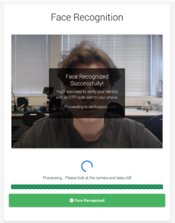
The door screen after a face is recognised, moving on to the passcode step.
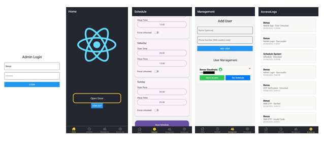
The admin app: login, remote unlock, opening hours, users and access logs.